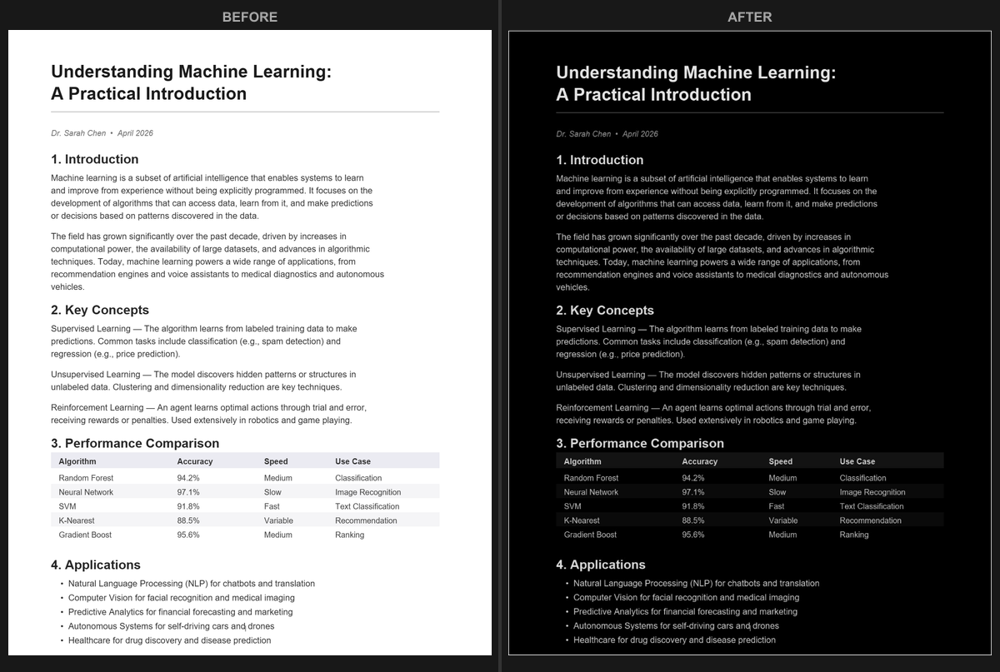

PDF Dark Mode on Any Device: Windows, Mac, iPhone, iPad & Android
Short version: every operating system has a dark mode, and none of them darkens the inside of a PDF - they only restyle apps and menus. Each platform has a partial accessibility workaround (Smart Invert, color filters, High-Contrast colors) but they are all display-only and break images. The fix that works on every device is to convert the PDF to a dark file once; it then reads dark in every app and stays dark when you share it.
I build the PDF Dark Mode Converter, and the single most common misunderstanding I see is the assumption that "dark mode" on your phone or laptop should carry into your documents. It never does - by design. Below is what each device genuinely offers, the accessibility tricks worth knowing, and where they fall short.

Windows & macOS
Windows 10/11 and macOS both have a system-wide dark mode that recolors apps, but a PDF opened in Edge, Chrome, Acrobat, or Preview still shows white pages. The desktop workarounds are the browser flags (see PDF dark mode in your browser) and Acrobat's accessibility mode (below) - all temporary. On macOS you can also try System Settings > Accessibility > Display > Invert colors, but that flips your entire screen, not just the document.

iPhone
iOS dark mode leaves PDF pages white in Safari, Files, and Books. Two accessibility settings come close but not all the way:
- Smart Invert (Settings > Accessibility > Display & Text Size > Smart Invert) inverts most colors while trying to spare images. Some viewers respect it on PDFs, others ignore it, and it is only on-screen.
- Reduce White Point dims the whole display - helpful in a dark room, but you are still reading dark text on a dimmed white page, not a true dark background.
iPad
The iPad is one of the best PDF readers around, and the same limitation applies - iPadOS dark mode and Smart Invert do not produce a real dark document. The iPad's advantage is what you do after converting: a dark-mode PDF opens normally in GoodNotes, Notability, and PDF Expert, and because the dark background is part of the file, your Apple Pencil annotations, highlights, and AirDrop shares all behave exactly as they would on a white document.

Android
Android's system dark theme also stops at the app interface. A few partial options exist - none permanent:
- Google Drive's dark mode only darkens the app's file list and menus; the PDF preview stays white.
- Reading mode / Eye Comfort Shield (on Samsung and some others) adds a warm tint to cut blue light, but does not darken the page.
- Reader apps like Xodo or Moon+ Reader offer a dark reading overlay, but it only works inside that app and the original file stays white when you share it.

Google Drive
Google Drive's PDF preview renders each page as an image with no color controls, and there is no dark setting for it anywhere in Drive. "Open with Google Docs" technically gives you a dark editor, but it converts the PDF to a Doc and usually mangles tables, columns, and images - only viable for the plainest text files. The dependable route is a 30-second loop: download the PDF, convert it to dark, and re-upload the dark version if you want it back in Drive.
Adobe Acrobat
Acrobat's Dark Mode (View > Display Theme > Dark Gray) darkens only the toolbar and panels - the document stays white by design. Acrobat can recolor pages, but it is buried in accessibility: Edit > Preferences > Accessibility > Replace Document Colors > Use High-Contrast colors. That darkens pages on screen, but it is display-only (gone when you print or share), it distorts images and diagrams, it offers only a few fixed presets, and it applies to every PDF you open until you turn it off.

How the device options compare
| Device / app | Native workaround | Permanent? | Keeps images intact? |
|---|---|---|---|
| Windows / macOS | Browser flag, OS invert | No | No |
| iPhone / iPad | Smart Invert, Reduce White Point | No | Partially |
| Android | Reader-app overlay, comfort shield | No | Varies by app |
| Google Drive | Open in Docs (mangles layout) | No | No |
| Adobe Acrobat | Replace Document Colors | No | No |
| Convert the file | PDF Dark Mode Converter | Yes | Yes (image-preserve option) |
The one method that works on every device
Convert the document once. The PDF Dark Mode Converter runs in any browser on any device - desktop, phone, or tablet - processes the file locally (nothing is uploaded), and writes a new PDF with the dark theme baked in. Open it in Files, Books, Drive, Acrobat, GoodNotes, or anything else and it is dark, every time, including when you share or print it. You also get 16+ themes and an option to preserve photos rather than invert them, which the accessibility shortcuts above cannot do.
Try it on your device: open the PDF Dark Mode Converter, drop a PDF, pick a theme, and download the dark version in seconds. Free, private, no app install.
Frequently Asked Questions
No. On Windows, macOS, iOS, iPadOS, and Android, the system dark theme only restyles apps and menus. PDF pages keep their original white background in every viewer.
Smart Invert inverts most on-screen colors while trying to spare images. With PDFs the results are inconsistent, and it is only a display effect - the file itself is unchanged when you share it.
Acrobat's Dark Mode theme only darkens the toolbar and menus. Its Accessibility setting "Replace Document Colors" with High-Contrast colors can darken pages on screen, but it is display-only, breaks images, offers few presets, and applies to every PDF you open.
Convert the PDF to a dark file once. Because the colors are baked in, it reads dark in every app on every device - and stays dark when you share it.